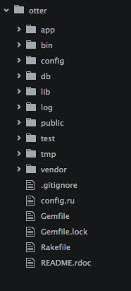
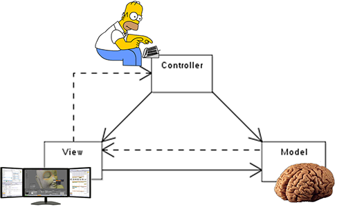

Ruby on Rails Crash Course
Instructor: Cecy Correa
Modified from GDI Seattle Ruby on Rails track.
Ruby review!
- Puts
- Variables
- gets.chomp
- Arrays
- Hashes
- Classes
- Sub-classes
Rails!
Rails
- Most well-known Ruby gem!
- Invented by DHH
- Came out in 2005
- By 2006, it was already powering Twitter
- Used by companies like Groupon, Funny or Die, Hulu, Airbnb...
Developing with Rails
You can use Cloud9 or Rails "locally" if you already have it installed.
If you're going to use Cloud9, go ahead and sign up for an account.
Create a new rails app
rails new app
You just created a new Rails app called "app".
You can call it whatever you want!
rails new bananas
^^That creates a new Rails app called "bananas"
We're done. Go home.
Let's look at the app.
Overwhelmed?
There's a lot in a Rails app, let's break it down
Convention over configuration
The reason Rails got so popular is for "convention over configuration." Rails already comes "pre-configured" with a lot of stuff so you don't have to spend time doing set-up.
This means you have to follow convention.
Good news! There's a lot of documentation and resources.
Convention over configuration
The downside is — you have to be careful with what you do / move.
For example, you wouldn't want to delete a folder you don't think you're going to use.
Let's look at the app again
What you need to know
For now, you really only want to be concerned with:
- app folder
- config folder
- db folder
App folder
The app folder contains, well, the most important elements of your app!
- Models folder
- Views folder
- Controllers folder
This is where you'll spend most of your time in
Config folder
The config folder is good for:
- Setting up for database (only have to do it once, it's super easy!)
- Setting up "routes" to direct traffic. (More on this later!)
DB folder
Your Rails app is going to need a database to run and store info.
The db folder will have all of the elements of your database.
Let's take a look!
Model-View-Controller
Also known as MVC
MVC
Model: the brains (like a class!)
Controller: dispatcher
View: what the user sees
MVC as a recipe
Model: ingredients of a recipe
Controller: directions of a recipe
View: picture of a recipe
MVC
"MVC" is a common "pattern" used in programming and it's what Rails uses.
The Model, View, and Controller all go hand in hand.
Commands to know
rails generate *something*
This is a generator that comes in Rails that helps create necessary files for you.
rake db:migrate
This is always necessecary to generate a database
Databases
sqlite3: the default database that comes with Rails
postgresql: more widely used in "real world" apps. You will need to install postgres in order to deploy your app.
There is an extra step with postgres when creating a database. You need to run rake db:create before rake db:migrate
Starting your Rails app
First steps:
- Create a Model
- Create a Migration
- Run the Migration
Likely you will only do these during project setup.
Starting your Rails app
Ongoing steps:
i.e. you will do these more than once over the course of development:
- Generate a Controller
- Write methods in your Controller
- Generate corresponding Views
- Create routes
Let's start coding!
Demo creating a Rails app!
Mind blown.
CRUD
What we just built is called "CRUD"
CREATE
READ
UPDATE
DELETE
This is the most common type of app.
Types of CRUD apps
A blog
Pretty much any app needs basic CRUD
What if I told you there is an easier way?
Rails scaffolding
rails generate scaffold *something*
This command generates:
- Model
- Migration
- Controller (filled in!)
- Views (filled in!)
- Routes
So why did we just spend so much time doing everything manually?
Because it's important to know the underlying factors of how things work.
Now you can spend your time being more productive!
Next steps: Gems
Gems
Gems are "packages" in Ruby that do things for you.
There are a lot of gems you can take advantage of.
This is great when you're learning! You can see the gem's source code and see how they implemented the feature.
Gems
When choosing a gem, make sure that:
- The "build" is passing
- It looks to be recently active
- Has a fair amount of contributors
- Is well documented
Adding a gem
Open your "Gemfile" (located at the root of the app)
gem 'name-of-gem'
Usually, the gem documentation will say how to do this
Run 'bundle install' on the command line to install your gems